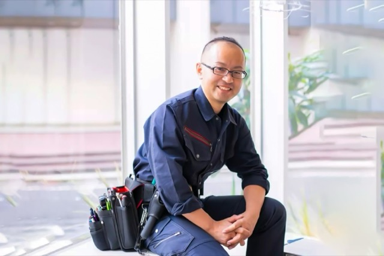
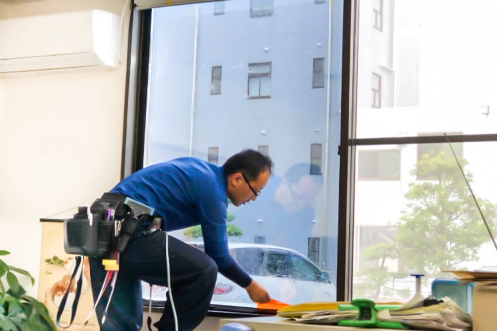
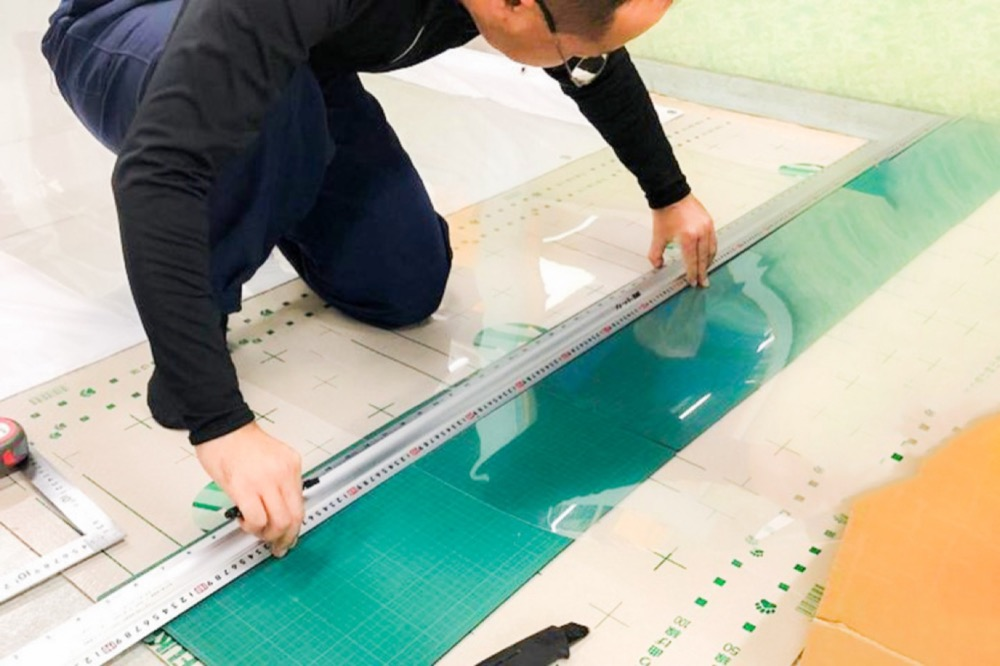

野田市が育てた万能型ガラスフィルム職人
澤田 岳典Takenori Sawada
WORKS ZERO 代表
1977年、千葉県野田市(旧関宿町)に生まれる。2001年、東京国際大学を卒業。その後、設備メーカー、ビール会社、保険業界を経て2016年に窓ガラスフィルム施工「WORKS ZERO」を創業。2020年に建築ガラス用フィルム施工技能士１級を取得。アメリカ大使館、防衛庁、筑波大学等の公共施設をはじめオフィス、工場、商業施設、介護施設、個人宅など、今までに1000件以上の施工実績をもつ。
企業サイトを見るTRACK 01
野田市が育てた万能型ガラスフィルム職人

千葉県の北西部・野田市を拠点に活動しているWORKS ZREOは窓ガラスフィルム専門の施工会社だ。澤田代表は生まれも育ちも野田市。故郷であるこの地を愛する現れとして、そのまま事業の拠点にしている。
窓ガラスフィルム施工1級技能士の資格をはじめ、ゴンドラ・フルハーネス・足場組立作業…澤田代表が身につけている技術は計り知れない。
帝国ホテル、防衛庁をはじめとした輝かしい実績を持っているWORKS ZREO。澤田代表はこの事業を1人でおこなっているというのだから驚きだ。今も現場に足を運んでおり、その数はなんと年間約200件。その仕事ぶりが認められ、地元の商工会から招聘され、高校生へ働くことについての講演もした経験もあるという。
TRACK 02
人生最大の危機をチャンスに変えた瞬間

前職は営業マンだった澤田代表。必死に仕事に取り組んでいたある日、なんの前触れもなく来たのが解雇通知の連絡だった。
呆然とする時間もなく、このままではまずいと必死になって就職活動に取り組んだものの、内定をもらえない日々が続く。そんな折、窓ガラスのフィルムが災害や防犯の対策として非常に有効であるということを発見した。「これだ！と思いました。ちょうど東日本大震災、相模原の殺傷事件の後ということもあり、この一枚のフィルムが必ず世の中の役に立つと確信したんです。」
そして2016年に独立。創業当時の一番の思い出は、意外にも仕事用の車についてだった。 開業資金もほとんどないなか、車だけはどうしても必要だった澤田代表。限られた予算でなんとか買える車を探し、当時なけなしのお金で手に入れたことを今でも思い出すという。「当時ネットオークションで買うのが一番安かったんです。ただ当時はトラブルも多かったので、購入先の方と連絡がとれなくなったらどうしようと思い、ずっとハラハラしていました。」
TRACK 03
価格や技術より大切なのは「正しいニーズの把握」
WORKS ZREOは「フィルム1枚で快適な空間のご提供」をモットーに、お客様がより過ごしやすい空間作りを実現している。 そのうえで大切にすることが「お客様のニーズを徹底して聞くこと」だという。
ある日、エステのオーナーさんから「ここは女性が自分のごほうびの場所にしたいから、それに合うフィルムを貼って欲しい」と依頼があった。大切なのは「女性が自分のごほうびの場所にしたい」とは何か、どのようなニーズが隠れているのかを徹底して聞き出していくことであり、その作業が「フィルム1枚で快適な空間をご提供する」というモットーにつながるというのだ。
一方で、お客様自身に商品を理解していただくこともより良い生活空間を提供するためには必要であると考え、窓ガラスフィルムの認知度や理解度をあげるために、SNSを活用した動画配信や、ビルオーナーや経営者へのプレゼンなどを精力的に行っている。